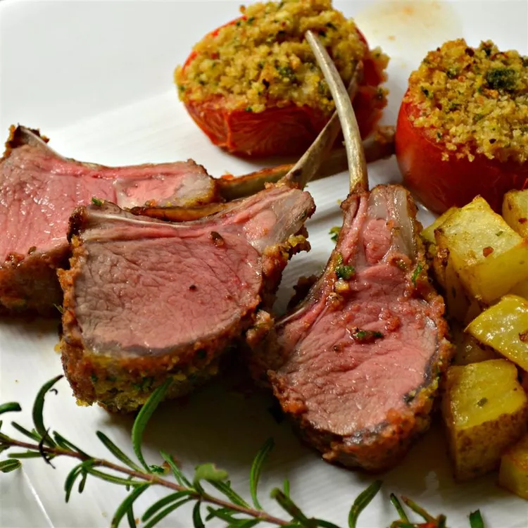

Roasted Rack of Lamb

Rack of Lamb Ingredients
Bread crumbs: Use store-bought or make your own bread crumbs.
Seasonings: This rack of lamb is seasoned with garlic, rosemary, salt, and black pepper.
Olive oil: Olive oil locks in moisture, preventing the meat from drying out.
Lamb: If you can, have your butcher trim and french (remove excess meat, fat and cartilage) the rack of lamb so you don’t have to do it at home.
Mustard: Dijon mustard gives the seasoned bread crumbs something to stick to. Plus, it adds irresistible flavor.
How Long to Cook Rack of Lamb
Roast the rack of lamb in an oven preheated to 450 degrees F for 12 to 18 minutes, depending on how you like your meat cooked.
For medium-well: An instant-read thermometer inserted into the center should read at least 140 degrees F (60 degrees C).
For well done: An instant-read thermometer inserted into the center should read at least 150 degrees F (65 degrees C).
Ingredients
- ½ cup fresh bread crumbs
- 2 tablespoons minced garlic
- 2 tablespoons chopped fresh rosemary
- 1 teaspoon salt
- ¼ teaspoon black pepper
- 2 tablespoons olive oil
- 1 (7 bone) rack of lamb, trimmed and frenched
- 1 teaspoon salt
- 1 teaspoon black pepper
- 2 tablespoons olive oil
- 1 tablespoon Dijon mustard
Directions
- Preheat the oven to 450 degrees F (230 degrees C). Move the oven rack to the center position.
- Combine bread crumbs, garlic, rosemary, 1 teaspoon salt, and 1/4 teaspoon pepper in a small bowl; stir in 2 tablespoons olive oil to moisten the mixture. Set aside.
- Season rack of lamb all over with 1 teaspoon salt and 1 teaspoon pepper. Heat 2 tablespoons olive oil in a large heavy oven-proof skillet over high heat. Add lamb and sear on all sides, about 1 to 2 minutes: set lamb aside for a few minutes. Brush lamb with mustard and roll in bread crumb mixture until evenly coated. Cover the ends of the bones with foil to prevent charring.
- Arrange the breaded rack of lamb bone-side down in the same skillet. Roast in preheated oven for 12 to 18 minutes for medium; an instant-read thermometer inserted into the center should read at least 130 degrees F (54 degrees C), or continue to cook to desired doneness. Remove lamb from the skillet and allow to rest for 5 to 7 minutes, loosely covered with foil, before carving between the ribs.
Back to the recipes